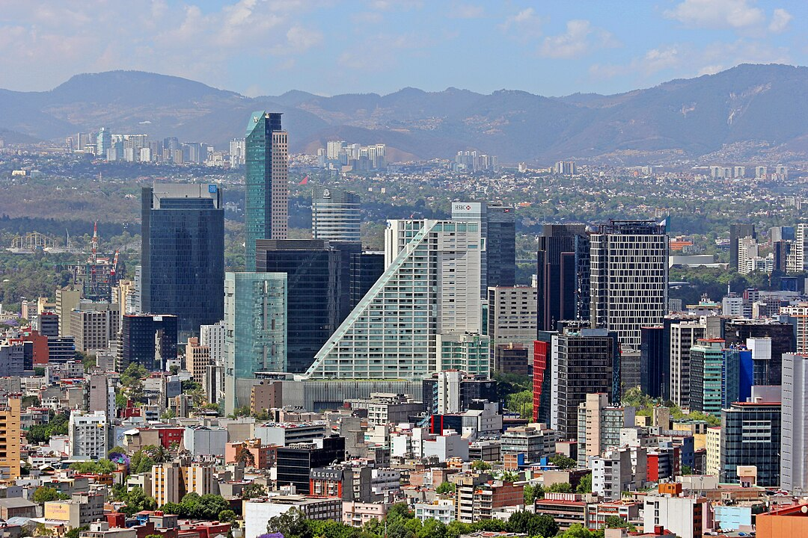

Meksyk
Meksyk, stolica Meksyku, to jedno z największych i najważniejszych miast na świecie. Jego historia jest pełna bogatych tradycji, od prekolumbijskich cywilizacji po współczesną metropolię, która łączy starożytne korzenie z nowoczesnością. Miasto jest znane zarówno z majestatycznych zabytków, jak i z tętniącego życiem współczesnego ducha.
Historia
Historia Meksyku sięga tysięcy lat przed przybyciem Hiszpanów. W okresie przedkolumbijskim, na tym terenie rozwijały się wielkie cywilizacje, w tym Aztekowie, którzy założyli swoje miasto Tenochtitlán na jeziorze Texcoco, w miejscu, gdzie dzisiaj znajduje się Meksyk. Miasto było jednym z największych i najpotężniejszych w ówczesnym świecie, słynącym z zaawansowanej architektury, rolnictwa i systemu wodociągowego. W 1521 roku Tenochtitlán zostało zdobyte przez Hiszpanów pod wodzą Hernána Cortésa, co zapoczątkowało okres kolonialny. W wyniku tego podboju miasto zostało zniszczone, a na jego miejscu powstała nowa stolica – Meksyk – będąca częścią hiszpańskiego imperium kolonialnego.
Po uzyskaniu niepodległości w 1821 roku, Meksyk stał się stolicą nowo powstałego państwa. W XIX i XX wieku miasto przeszło liczne zmiany, zarówno polityczne, jak i społeczne, a jego rozwój przyspieszył po rewolucji meksykańskiej w 1910 roku. Współczesny Meksyk to dynamiczna metropolia, która jest jednym z największych ośrodków kulturalnych, gospodarczych i politycznych na świecie. Dziś miasto jest siedzibą rządu Meksyku, a także centrum handlu, przemysłu i edukacji.
Kultura
Kultura Meksyku jest niezwykle zróżnicowana, odzwierciedlając zarówno rdzenne tradycje, jak i wpływy hiszpańskie oraz inne. Meksyk jest znany ze swojej muzyki, tańców, sztuki i kuchni. Z jedną z najważniejszych tradycji jest Dzień Zmarłych, obchodzony 1 i 2 listopada, podczas którego Meksykanie składają hołd zmarłym, dekorując groby, przygotowując specjalne potrawy i organizując parady. Również mariachi, tradycyjna muzyka z Jalisco, stała się symbolem kultury meksykańskiej. Współczesna sztuka Meksyku czerpie z tych korzeni, ale również rozwija się na gruncie nowoczesnych nurtów, co widać w wielu galeriach, muzeach i teatrach w mieście.
Atrakcje
Miasto Meksyk oferuje wiele atrakcji turystycznych, które łączą bogatą historię z nowoczesnością. Zocalo, główny plac w centrum miasta, jest jednym z największych na świecie i stanowi serce historycznej części miasta. Otaczają go imponujące budowle, w tym Katedra Metropolitalna, jeden z najstarszych kościołów w Amerykach, oraz Pałac Narodowy, w którym znajduje się siedziba prezydenta Meksyku. Tu również znajdują się murale Diego Rivery, które stanowią ważną część dziedzictwa artystycznego kraju.
Warto również odwiedzić Templo Mayor, ruiny azteckiej świątyni, które odkryto w latach 70. XX wieku. To miejsce było niegdyś sercem Tenochtitlánu i do dziś można zobaczyć pozostałości tej wielkiej cywilizacji. Innym istotnym punktem jest Chapultepec Park, ogromny park miejski z licznymi muzeami, w tym Muzeum Antropologiczne, które jest jednym z najważniejszych na świecie, prezentującym bogactwo prekolumbijskich cywilizacji Meksyku. W samym parku znajduje się także Zamek Chapultepec, który pełnił funkcję rezydencji cesarskiej i prezydenckiej.
Meksyk to również miasto pełne życia nocnego, z licznymi restauracjami, barami i klubami, które serwują zarówno tradycyjne meksykańskie dania, jak tacos, enchiladas czy mole, jak i dania nowoczesne inspirowane kuchnią międzynarodową. Meksyk jest również znany z różnorodnych festiwali, które odbywają się przez cały rok, w tym Festiwalu Filmowego w Meksyku, Festiwalu Muzyki i Sztuki w Chapultepec oraz wielu innych wydarzeń kulturalnych, które przyciągają zarówno turystów, jak i mieszkańców.
Miasto Meksyk to niezwykła mieszanka przeszłości i teraźniejszości, która sprawia, że jest jednym z najbardziej fascynujących miejsc na świecie. Z bogatą historią, kulturą, sztuką i niezliczonymi atrakcjami, Meksyk wciąż pozostaje jednym z najważniejszych centrów kulturowych w Ameryce Łacińskiej.